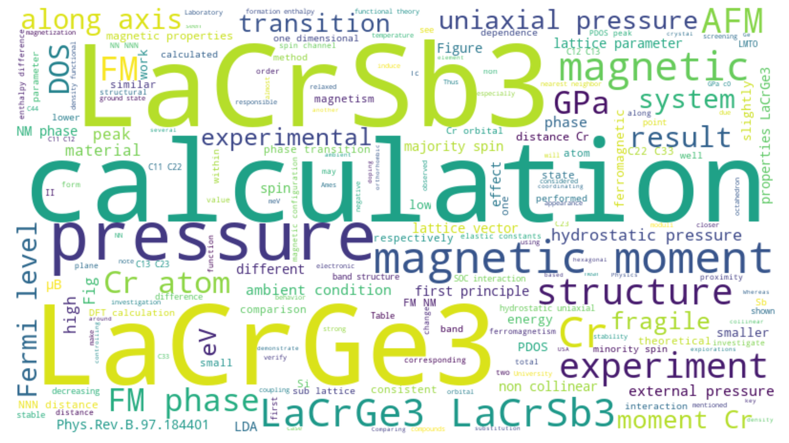
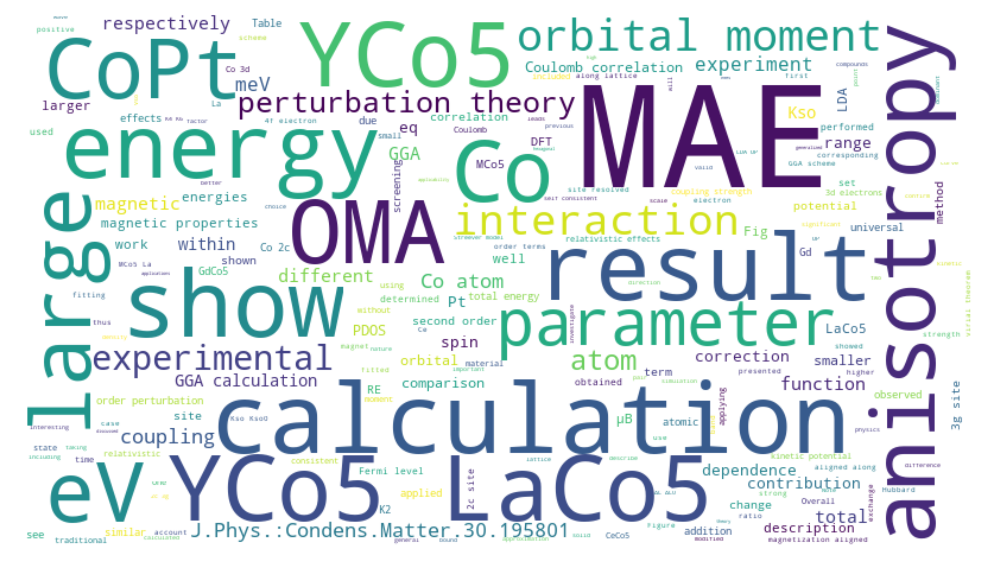
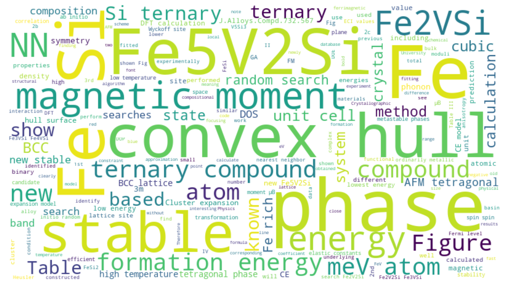
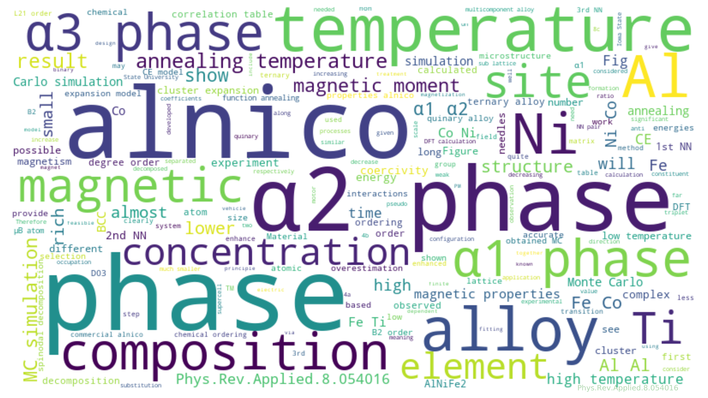

* Manh Cuong Nguyen, Valentin Taufour, Sergey L. Bud’ko, Paul C. Canfield, Vladimir P. Antropov, Cai-Zhuang Wang and Kai-Ming Ho
"Using first-principles calculations to search for fragile magnetism: Case study of LaCrGe3 and LaCrSb3"
Phys. Rev. B 97, 184401 (2018) [Link]

* Manh Cuong Nguyen, Yongxin Yao, Cai-Zhuang Wang, Kai-Ming Ho and Vladimir P. Antropov
"Magnetocrystalline anisotropy in cobalt based magnets: A choice of correlation parameters and the relativistic effects"
J. Phys.: Condens. Matter 30, 195801 (2018) [Link]

* Manh Cuong Nguyen, Chong Chen, Xin Zhao, Jun Liu, Cai-Zhuang Wang and Kai-Ming Ho
"Prediction of novel stable Fe-V-Si ternary phase"
J. Alloys Compd. 732, 567 (2018) [Link]

* Manh Cuong Nguyen, Wei Tang, Lin Zhou, Matthew J. Kramer, Iver E. Anderson, Cai-Zhuang Wang and Kai-Ming Ho
"Cluster-expansion model for complex quinary alloys: application to alnico permanent magnets"
Phys. Rev. Applied, 8, 054016 (2017) [Link]

* Manh Cuong Nguyen, Jin-Ho Choi, Xin Zhao, Cai-Zhuang Wang, Zhenyu Zhang and Kai-Ming Ho
"New layered structures of cuprous chalcogenides as thin film solar cell materials: Cu2Te and Cu2Se"
Phys. Rev. Lett. 111, 165502 (2013) [Link]